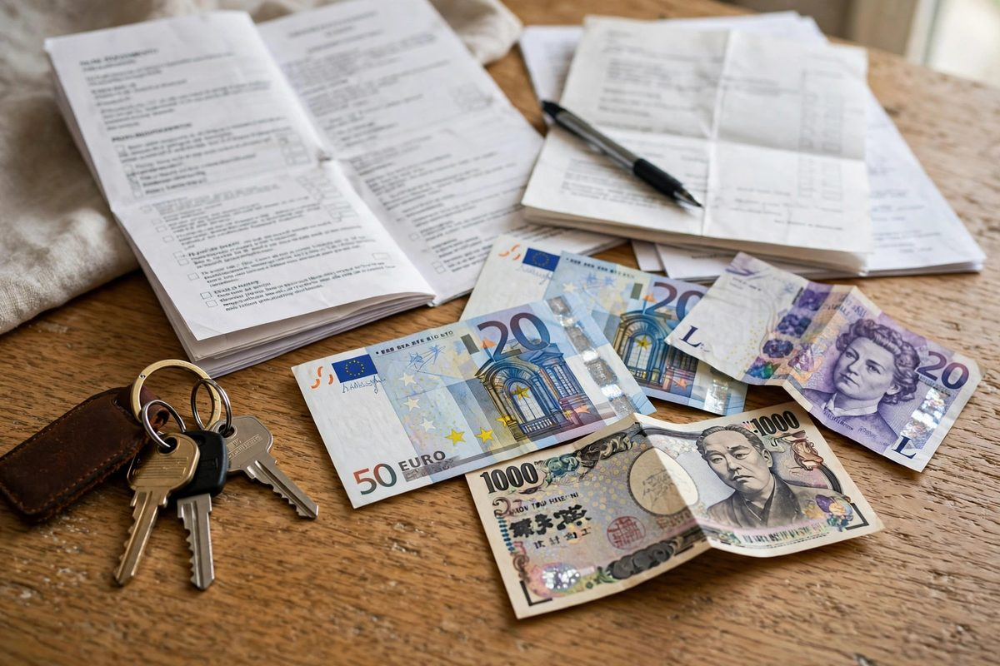

Buying Property Abroad: The Currency Guide Nobody Gives You

Why currency matters more than the price
When you buy property abroad, the exchange rate is part of the price. A home costing 300,000 euros costs 327,000 dollars at 1.09 dollars per euro, but 345,000 dollars if the rate moves to 1.15, a difference of 18,000 dollars on the same house. Few buyers budget for that swing, and many discover it only when the payment is due. The currency risk on a property purchase is often larger than the legal fees, the agent's commission, and the taxes combined.
The risk lasts for months, from the offer to the final payment, and rates can move several percent in that time. A buyer who ignores currency is gambling with the largest purchase of their life, while a buyer who plans for it can save thousands with a few simple steps. The goal is not to predict the market, which no one can do reliably, but to control the cost.
Planning the payments
Break the purchase into its payments: deposit, stage payments, and the final balance, each with a date and an amount in the local currency. Convert the deposit early if the rate is favourable, and consider a forward contract for the final balance, which locks the rate for a future date and removes the uncertainty. Many specialist transfer providers offer forwards for property purchases, and the cost is usually far less than a bad rate move.
Compare providers on the total received for each payment, not on the fee alone, and use the same provider for the whole purchase where possible, since a relationship can improve the rate on large amounts. Keep a buffer of five percent above your estimate, so a rate move does not leave you short on completion day. Tell your solicitor or notary about your payment plan, so the timing of transfers matches the legal deadlines.
Common mistakes
The most expensive mistake is using a high-street bank for the transfer, which can cost three to five percent, or 9,000 to 15,000 dollars on a 300,000 euro purchase. Another is converting everything at the last minute, when there is no time to wait for a better rate or fix a problem. A third is forgetting the smaller payments, such as taxes, notary fees, and furniture, which also need converting and also carry a spread.
Finally, keep records of every transfer, rate, and fee, since property purchases often need proof of the source of funds for anti-money-laundering checks. A specialist provider will supply the documents you need, while a casual transfer may not. With planning, a forward contract, and a good provider, the currency side of a property purchase becomes a controlled cost rather than a gamble.
Putting It Into Practice
If you are buying property abroad, list every payment with its date and amount in the local currency, then ask two specialist providers for a quote on the total and on a forward contract for the final balance. Keep a five percent buffer above your estimate, and tell your solicitor about your payment plan so transfers match legal deadlines. The few hours this planning takes can save thousands, and it turns the largest purchase of your life from a currency gamble into a controlled cost.
Frequently Asked Questions
How much can the exchange rate change a property price?
Several percent over a few months, which on a 300,000 euro home can mean 10,000 to 20,000 dollars.
What is a forward contract for a property purchase?
An agreement to lock an exchange rate for a future payment, removing uncertainty about the final cost.
Should I use a bank for a property transfer abroad?
Usually not. Specialist providers are typically two to four percent cheaper, which is thousands on a property purchase.